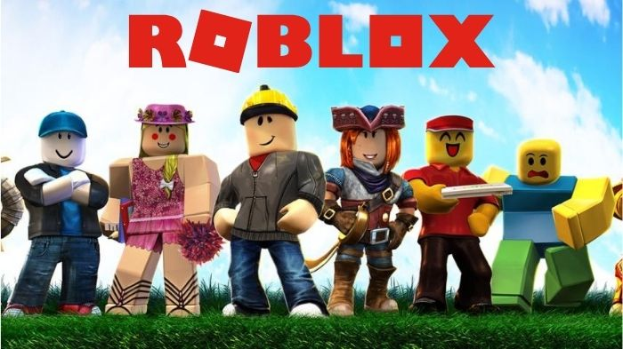

Estamos empolgados em receber novos integrantes no nosso servidor "OS CARA TANKA"! Somos uma comunidade de gamers e amigos que adoram jogar juntos e se divertir. Se você está procurando uma galera legal para compartilhar experiências de jogo e momentos divertidos, você veio ao lugar certo!
O site ainda está em desenvolvimento, em algumas imagens de jogos abaixo, será possível clicar para visualizar o mapa e acessar a página de download.
Clique no botão abaixo para se juntar ao nosso servidor no Discord:
Valorant é um jogo de tiro tático em primeira pessoa (FPS) desenvolvido pela Riot Games. Os jogadores assumem o papel de agentes com habilidades especiais em partidas estratégicas 5v5. A ênfase está na cooperação e na estratégia para vencer os adversários.
League of Legends é um popular jogo de batalha online em arena (MOBA) da Riot Games. Duas equipes competem para destruir a base inimiga enquanto controlam campeões com habilidades únicas. A estratégia e a coordenação de equipe são essenciais.
Minecraft é um jogo sandbox de construção e exploração criado pela Mojang. Os jogadores exploram um mundo aberto e construem estruturas, coletam recursos e enfrentam inimigos à medida que usam sua criatividade para criar mundos únicos.
FiveM é uma plataforma de modificação para o jogo Grand Theft Auto V (GTA V). Ele permite que os jogadores personalizem servidores e modifiquem o jogo para criar experiências multiplayer únicas, incluindo modos de role-playing (RP) populares.
Overwatch 2 é um jogo de tiro em primeira pessoa (FPS) desenvolvido pela Blizzard Entertainment. É a sequência do Overwatch original e continua a enfocar batalhas intensas entre heróis, com novos personagens, mapas e modos de jogo.

Roblox é uma plataforma de criação de jogos e comunidade onde os jogadores podem criar, compartilhar e jogar jogos criados por outros. É conhecido por sua variedade de experiências de jogo, que vão desde jogos de aventura até simulações e jogos sociais.